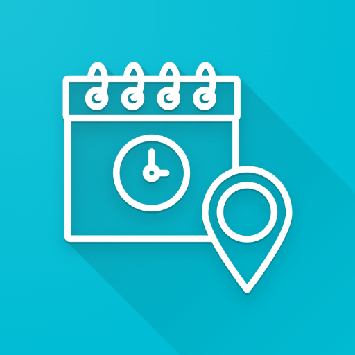
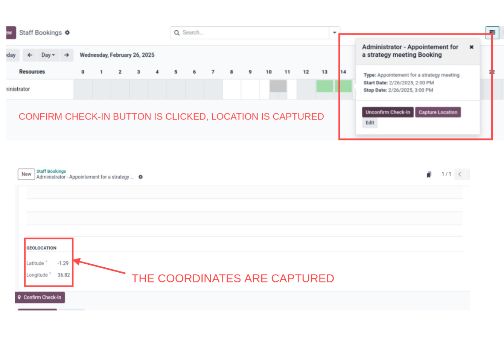

Appointment Geolocation
Overview
Appointment Geolocation enhances the calendar event form by capturing your current geolocation (latitude and longitude) when an employee confirms check-in. A clickable Google Maps link is generated based on the captured coordinates, making it easy to visualize the appointment location.
Features
- Geolocation Capture: Automatically records latitude and longitude upon check-in.
- Clickable Map Link: Generates a Google Maps URL from the captured coordinates.
- Integrated Check-In: Adds a Confirm Check-In button to the appointment form.
- Gantt View Integration: Provides a Capture Location button in the Gantt popover for quick geolocation capture.
- Reset Functionality: Offers a mechanism to reset the geolocation data to 0.0.
Installation
- Place Module: Copy the module folder into your custom addons directory.
- Update Odoo: Restart your Odoo server and update the Apps list.
- Install Module: Locate Appointment Geolocation in the Apps menu and install the module.
Usage
Calendar Event Form: Open an appointment to view the additional geolocation fields (latitude, longitude, and a clickable map link). Click the Confirm Check-In button to capture your current location.
Gantt View: Click the Capture Location button in the Gantt popover to quickly record your geolocation.
Screenshots
Gantt View Popover
Map Link Preview

FAQ
What happens if my browser doesn't support geolocation?
The module displays a notification and falls back to the default check-in behavior without capturing geolocation.
Can I reset the captured geolocation?
Yes, the module provides an "Uncheck-In" functionality that resets the latitude and longitude fields to 0.0.
How is the Google Maps link generated?
The module uses the captured latitude and longitude to create a URL in the format:
https://www.google.com/maps?q=latitude,longitude
Support
For support or further inquiries, please contact: support@metroict.com.
License
This module is licensed under the LGPL-3 License.